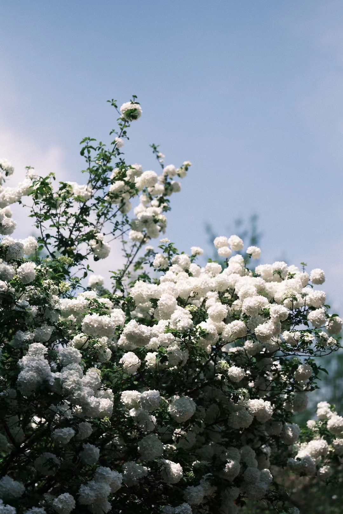

About Me
Hi! I'm Chris. I graduated with a bachelor's degree in Journalism. During my undergraduate years, I was immersed in the world of media and communication, learning about how to report news and tell stories.
However, now I've made a big leap and am currently studying Computer Science as a cross-disciplinary pursuit. It's been an exciting and challenging journey so far.
In my free time, I have a variety of hobbies. I absolutely love traveling. New places, experiencing different cultures, and meeting new people are things that truly enrich my life. I'm also a huge fan of KPOP. The energetic music and amazing choreography always get me pumped up.
And of course, I enjoy indulging in delicious food. Whether it's a local specialty or an international cuisine, I'm always eager to taste and savor it. That's a little bit about me!

My Photography Portfolio
I really like photography because I believe that a camera can capture the wonderful moments in life.
So I want to share some of the happy moments in my life on this website. Now, let's enjoy them together!
